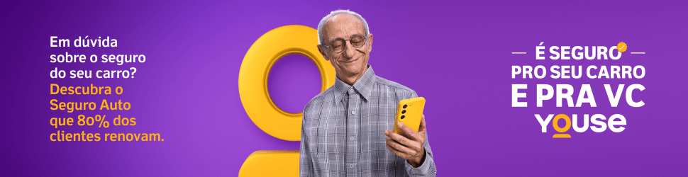

Após longos debates sobre a possibilidade de os pilotos xingarem, Max Verstappen recebeu uma penalidade de serviço comunitário por dizer que seu carro estava "f***ed" no Grande Prêmio de Cingapura. Agora, Leclerc é o próximo piloto a xingar durante uma coletiva de imprensa, após o GP do México.
O piloto monegasco estava falando sobre a perda de sua Ferrari na saída da última curva do Autódromo Hermanos Rodriguez, quando foi perseguido por Lando Norris. "Mais uma vez, senti que era uma questão de voltas, mas eu ainda estava tentando fazer todo o possível para que ele superaquecesse atrás de mim e o mantivesse o maior tempo possível atrás de mim. Então, tentei fazer a melhor saída possível. Pude ver que ele estava muito próximo na saída daquela curva", começou.
"Perdi a traseira e você se esquece do Lando e só espera recuperá-la. Tive uma ultrapassagem e, quando me recuperei da ultrapassagem, tive uma ultrapassagem do outro lado e pensei: 'f**k'", disse Leclerc
